Material in anderen Sprachen
Auf den deutschen Seiten stehen nur deutschsprachige Materialien. Hier findest du meine Materialien in Englisch, Spanisch, Französisch und Italienisch – jede Sprache hat eine eigene Seite.
English
Englische Lesetexte, Lesespuren (Reading Trails) und Rechenwelten – erhältlich auf Teachers Pay Teachers. · 3.632 Materialien
Zur Seite auf English →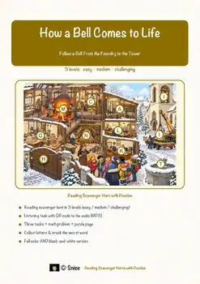
Bell Making Reading Comprehension Passages | Music Scavenger Hunt 5-6
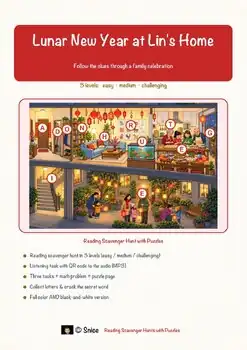
Lunar New Year Reading Comprehension Passages | Winter Scavenger Hunt 5-6
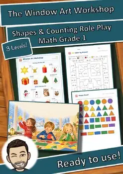
Window Art Workshop Shapes Counting Role Play | Winter Math Center Grade 1
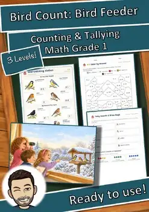
Bird Feeder Counting Math Role Play | Winter Math Center Grade 1
Español
Spanische Lesetexte, Arbeitsblätter und Lesespuren (Búsquedas del tesoro) – erhältlich auf Teachers Pay Teachers. · 2.103 Materialien
Zur Seite auf Español →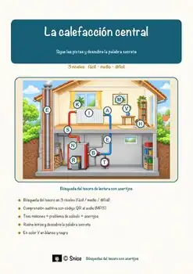
«La calefacción central» – Búsqueda del tesoro de lectura
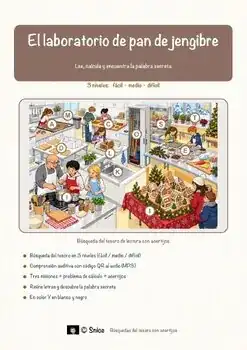
«El laboratorio de pan de jengibre: Geometría entre moldes, medidas y casas» – Búsqueda del tesoro de lectura

«Luz y energía en invierno» – Búsqueda del tesoro de lectura
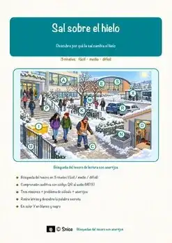
«Sal sobre el hielo» – Búsqueda del tesoro de lectura
Français
Französische Arbeitsblätter mit Lückentext, Hörverstehen und Suchsel – erhältlich auf eduki. · 3.355 Materialien
Zur Seite auf Français →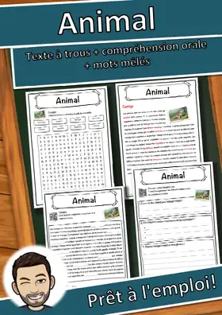
Animal – Fiche : texte à trous, compréhension orale et mots mêlés
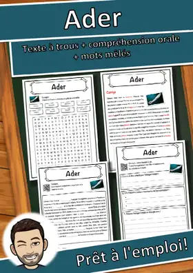
Ader – Fiche : texte à trous, compréhension orale et mots mêlés
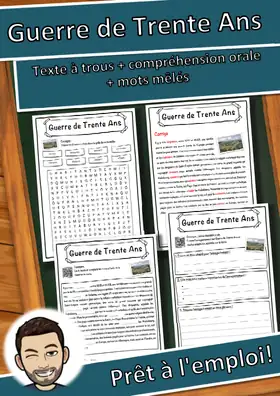
Guerre de Trente Ans – Fiche : texte à trous, compréhension orale et mots mêlés
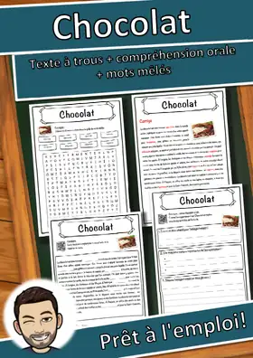
Chocolat – Fiche : texte à trous, compréhension orale et mots mêlés
Italiano
Italienische Arbeitsblätter mit Lückentext, Hörverstehen und Suchsel – erhältlich auf eduki. · 2.106 Materialien
Zur Seite auf Italiano →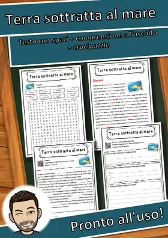
Terra sottratta al mare – Scheda: testo con spazi vuoti, comprensione all'ascolto e crucipuzzle
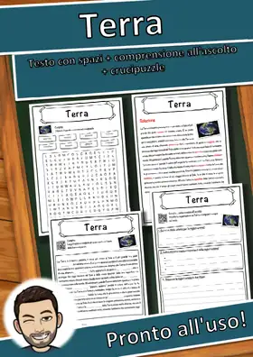
Terra – Scheda: testo con spazi vuoti, comprensione all'ascolto e crucipuzzle
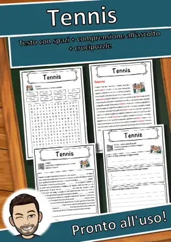
Tennis – Scheda: testo con spazi vuoti, comprensione all'ascolto e crucipuzzle
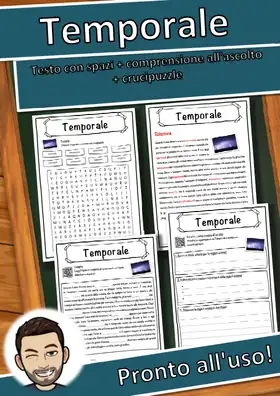
Temporale – Scheda: testo con spazi vuoti, comprensione all'ascolto e crucipuzzle
Englische Arbeitsblätter für den Englischunterricht in Deutschland gibt es außerdem auf eduki: English Worksheets.